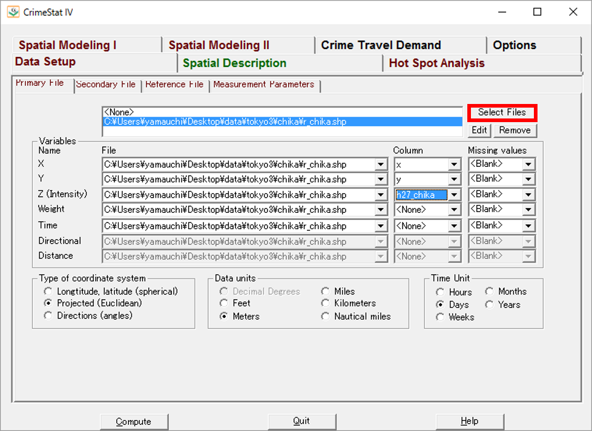
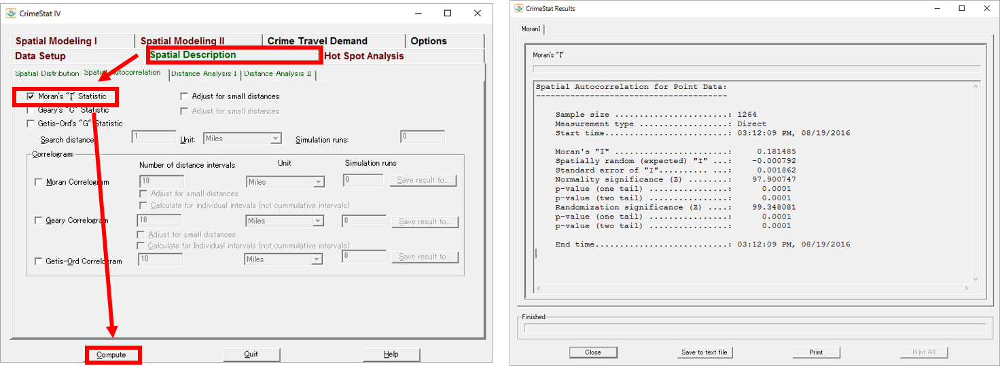
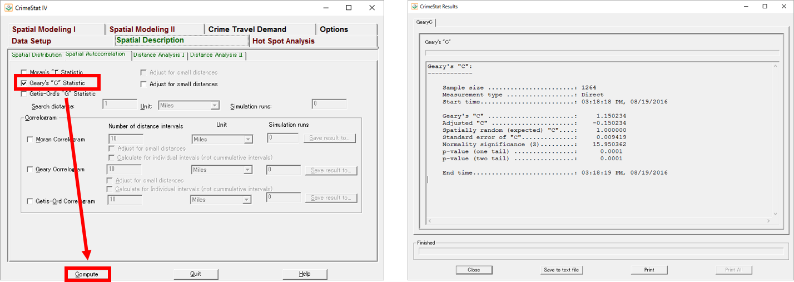

空間的自己相関
本教材は、「空間的自己相関」の実習用教材です。GISソフトウェアを用いた、空間的自己相関の分析手法について解説しています。ソフトウェアには、無償で利用できるCrimeStatを用いています。
講義用教材として、地理情報科学教育用スライド（GIScスライド）の4章が参考になります。
本教材を使用する際は、利用規約をご確認いただき、これらの条件に同意された場合にのみご利用下さい。
Menu
使用データ
- 国土数値情報 平成27年東京都地価公示 を加工し利用
スライド教材
スライドのダウンロードはこちら
CrimeStatのインストール
NIJサイトにアクセスし、CrimeStat IV をダウンロードし、解凍後に.exeファイルを起動する。
Moran’s I 統計量
 Select Filesからデータを読み込む。XとYに位置座標を設定し、Zに地価の値を設定する。
Projected, Meters, Days にチェックを入れる。
 タブをSpatial Descriptionに切り替え、Moran’s I staticにチェックをいれ、「compute」をクリックすると値が算出される。
Geary‘s C 統計量
 Geary‘s C にチェックをいれ、「compute」をクリックすると値が算出される。
Join count 統計量
Join count 統計量はR等で、算出することができる。 下記は計算の例である。
#Join count 統計量
chika.hi.low <- cut(chika$h27_chika, breaks=c(0,mean(chika$h27_chika), max(chika$h27_chika)), labels=c("low", "high"))
names(chika.hi.low) <- chika$ID
joincount.multi(chika.hi.low, nb2listw(chika.tri.nb,
style="B"))
Joincount Expected Variance z-value
low:
low 2856.000 2542.624 280.119 18.724
high:high 413.000 120.115 90.209 30.837
high:low 502.000 1108.261 445.501 -28.723
Jtot 502.000 1108.261 445.501 -28.723
空間的自己相関の分析にRを利用する手法は、古谷知之（2011） 『Ｒによる空間データの統計分析 (統計科学のプラクティス)』が詳しい。
その他のライセンス
本教材で利用しているキャプチャ画像の出典やクレジットについては、その他のライセンスについてよりご確認ください。